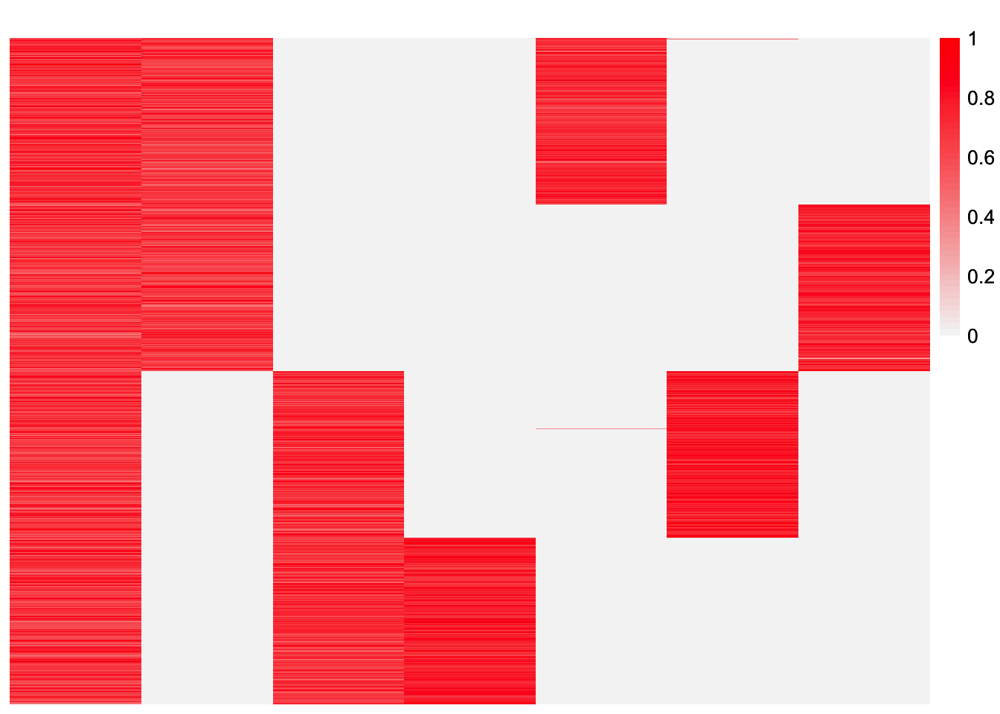

simple-simulation-normal-data
Annie Xie
2024-05-27
Last updated: 2024-05-28
Checks: 7 0
Knit directory: EBCD_GBCD_comparison/
This reproducible R Markdown analysis was created with workflowr (version 1.7.1). The Checks tab describes the reproducibility checks that were applied when the results were created. The Past versions tab lists the development history.
Great! Since the R Markdown file has been committed to the Git repository, you know the exact version of the code that produced these results.
Great job! The global environment was empty. Objects defined in the global environment can affect the analysis in your R Markdown file in unknown ways. For reproduciblity it’s best to always run the code in an empty environment.
The command set.seed(20240229) was run prior to running
the code in the R Markdown file. Setting a seed ensures that any results
that rely on randomness, e.g. subsampling or permutations, are
reproducible.
Great job! Recording the operating system, R version, and package versions is critical for reproducibility.
Nice! There were no cached chunks for this analysis, so you can be confident that you successfully produced the results during this run.
Great job! Using relative paths to the files within your workflowr project makes it easier to run your code on other machines.
Great! You are using Git for version control. Tracking code development and connecting the code version to the results is critical for reproducibility.
The results in this page were generated with repository version 9f65974. See the Past versions tab to see a history of the changes made to the R Markdown and HTML files.
Note that you need to be careful to ensure that all relevant files for
the analysis have been committed to Git prior to generating the results
(you can use wflow_publish or
wflow_git_commit). workflowr only checks the R Markdown
file, but you know if there are other scripts or data files that it
depends on. Below is the status of the Git repository when the results
were generated:
Ignored files:
Ignored: .DS_Store
Ignored: .Rhistory
Ignored: code/.DS_Store
Ignored: data/.DS_Store
Untracked files:
Untracked: analysis/EBCD-laplace-splitting.Rmd
Untracked: analysis/ridgeless-regression-comparison.Rmd
Note that any generated files, e.g. HTML, png, CSS, etc., are not included in this status report because it is ok for generated content to have uncommitted changes.
These are the previous versions of the repository in which changes were
made to the R Markdown
(analysis/simple-simulation-normal-data.Rmd) and HTML
(docs/simple-simulation-normal-data.html) files. If you’ve
configured a remote Git repository (see ?wflow_git_remote),
click on the hyperlinks in the table below to view the files as they
were in that past version.
| File | Version | Author | Date | Message |
|---|---|---|---|---|
| Rmd | 9f65974 | Annie Xie | 2024-05-28 | Add simple normal simulation to illustrate GBCD vs. EBCD |
Introduction
In this analysis, we run a simple simulation to illustrate the difference in empirical results for EBCD and GBCD.
Packages and Functions for Analyses
library(ggplot2)
library(cowplot)
library(RColorBrewer)
library(ggrepel)
library(pheatmap)
library(gridExtra)
#library(Seurat)
library(Matrix)
library(ebnm)
library(flashier)Loading required package: magrittrlibrary(magrittr)
library(ashr)
library(irlba)
library(reshape2)
library(patchwork)
Attaching package: 'patchwork'The following object is masked from 'package:cowplot':
align_plotslibrary(fastTopics)
source("~/Documents/PhD 3/Research/EBCD/gbcd-workflow/code/fit_cov_ebnmf.R")plot_heatmap <- function(L, title = "", colors_range = c("gray96", "red")){
### define the color map
cols <- colorRampPalette(colors_range)(49)
brks <- seq(min(L), max(L), length=50)
plt <- pheatmap(L, show_rownames = FALSE, show_colnames = FALSE, cluster_rows = FALSE, cluster_cols = FALSE, color = cols, breaks = brks, main = title)
return(plt)
}source("~/Documents/PhD 3/Research/EBCD/ebcd_functions.R")
source("~/Documents/PhD 3/Research/EBCD/gbcd_functions.R")Data Generation
generate_normal_data_patient <- function(noise_sd){
### simulate L
LL <- matrix(0, nrow=800, ncol=7)
LL[,1] <- 1
LL[1:400, 2] <- 1
LL[401:800, 3] <- 1
LL[1:200,4] <- 1
LL[201:400, 5] <- 1
LL[401:600, 6] <- 1
LL[601:800, 7] <- 1
### simulate F
FF <- matrix(0, nrow=2100, ncol = 7)
FF[1:300,1] <- rnorm(300, mean = 0, sd = 1)
FF[301:600,2] <- rnorm(300, mean = 0, sd = 1)
FF[601:900,3] <- rnorm(300, mean = 0, sd = 1)
FF[901:1200, 4] <- rnorm(300, mean = 0, sd = 1)
FF[1201:1500, 5] <- rnorm(300, mean = 0, sd = 1)
FF[1501:1800,6] <- rnorm(300, mean = 0, sd = 1)
FF[1801:2100, 7] <- rnorm(300, mean = 0, sd = 1)
FF <- t(t(FF)/apply(FF,2, function(x){return(sqrt(sum(x^2)))}))
##FF <- matrix(rnorm(3 * 2100, sd = 1), ncol = 3)
### generate normal noise
E <- matrix(rnorm(800*2100, mean = 0, sd = noise_sd), ncol = 2100)
### save the simulated data
data <- list(Y = LL %*% t(FF) + E, LL = LL, FF = FF)
return(data)
}set.seed(2052)
data_norm_patient <- generate_normal_data_patient(0.1)Visualizations of the data
dim(data_norm_patient$Y)[1] 800 2100plot_heatmap(data_norm_patient$LL)
plot_heatmap(data_norm_patient$FF, colors_range = c('blue','red'))plot_heatmap(t(data_norm_patient$FF) %*% data_norm_patient$FF)observed.vals_patient <- data_norm_patient$Y %*% t(data_norm_patient$Y)/ ncol(data_norm_patient$Y)plot_heatmap(observed.vals_patient)GBCD Analysis
Hypothesis
I hypothesize that GBCD will be able to recover both subtype effects and all four patient effects.
Analysis
This is the code to run the GBCD analysis.
fit.gbcd <- flash_fit_cov_ebnmf(Y = data_norm_patient$Y, Kmax = 10, prior = ebnm::ebnm_generalized_binary, thres = 0.9, extrapolate = FALSE)This is a plot of estimate for \(L\):
plot_heatmap(fit.gbcd$L)
Rescale GBCD loadings estimate:
This is the code to rescale the GBCD estimate. I’ve loaded in previously saved results.
fit.gbcd.rescale1 <- flash_fit_cov_ebnmf_fit_laplace(Y = data_norm_patient$Y, Kmax = 10, prior = ebnm::ebnm_generalized_binary, thres = 0.9, extrapolate = FALSE, maxiter = 500, verbose = 1)
fit.gbcd.rescale2 <- flash_fit_cov_ebnmf_fit_L(dat = fit.gbcd.rescale1$dat, fit.gbcd.rescale1$fit.cov, Y=data$Y, Kmax=16, prior = ebnm::ebnm_generalized_binary, thres = 0.9, extrapolate = FALSE, maxiter = 500, verbose = 1)LDF Method of Scaling:
fit.gbcd.rescale.ldf <- ldf(fit.gbcd.rescale2$fit.cov, type = 'i')
fit.gbcd.rescale.L <- fit.gbcd.rescale.ldf$L %*% diag(sqrt(fit.gbcd.rescale.ldf$D))
thres <- 0.9
k.idx <- which(fit.gbcd.rescale2$corr > thres)
fit.gbcd.rescale.L <- fit.gbcd.rescale.L[,fit.gbcd.rescale2$k.order][,k.idx]plot_heatmap(fit.gbcd.rescale.L)gbcd.rescaled.fitted.vals <- fit.gbcd.rescale.L %*% t(fit.gbcd.rescale.L)plot_heatmap(gbcd.rescaled.fitted.vals)sum((observed.vals_patient - gbcd.rescaled.fitted.vals)^2) - sum((diag(observed.vals_patient) - diag(gbcd.rescaled.fitted.vals))^2)[1] 0.03142032This is code to plot (a sub-sampple of) fitted values vs. observed values:
set.seed(3952)
diag_idx <- seq(1, prod(dim(observed.vals_patient)), length.out = ncol(observed.vals_patient))
off_diag_idx <- setdiff(c(1:prod(dim(observed.vals_patient))), diag_idx)
samp.vals <- sample(off_diag_idx, size = 100000)ggplot(data = NULL, aes(x = c(as.matrix(observed.vals_patient))[samp.vals], y = c(gbcd.rescaled.fitted.vals)[samp.vals])) + geom_point() + xlab('Observed Values') + ylab('Fitted Values') + geom_abline(slope = 1, intercept = 0, color = 'red')This is a plot of the diagonal entries of the fitted values vs. the diagonal entries of the observed values:
ggplot(data = NULL, aes(x = diag(as.matrix(observed.vals_patient)), y = diag(gbcd.rescaled.fitted.vals))) + geom_point() + xlab('Observed Values') + ylab('Fitted Values') + geom_abline(slope = 1, intercept = 0, color = 'red')Observations
GBCD is able to recover both subtype effects and all four patient effects.
EBCD Analysis
Hypothesis
I hypothesize that EBCD should be able to recover both subtype effects and all four patient effects. However, previous experience working with EBCD has shown that it has not always been able to find the effects. Additionally, sometimes it groups patient effects together.
Analysis
set.seed(368)
fit.ebcd <- ebcd(X = t(data_norm_patient$Y), Kmax = 7, ebnm_fn = ebnm::ebnm_generalized_binary)plot_heatmap(fit.ebcd$EL)ebcd.fitted.vals <- fit.ebcd$EL %*% t(fit.ebcd$EL)This is a plot of \(LL^{T}\).
plot_heatmap(ebcd.fitted.vals)sum((observed.vals_patient - ebcd.fitted.vals)^2) - sum((diag(observed.vals_patient) - diag(ebcd.fitted.vals))^2)[1] 0.04575624This is a plot of (a subset of) the fitted values vs. observed values:
set.seed(3952)
diag_idx <- seq(1, prod(dim(observed.vals_patient)), length.out = ncol(observed.vals_patient))
off_diag_idx <- setdiff(c(1:prod(dim(observed.vals_patient))), diag_idx)
samp.vals <- sample(off_diag_idx, size = 100000)ggplot(data = NULL, aes(x = c(as.matrix(observed.vals_patient))[samp.vals], y = c(ebcd.fitted.vals)[samp.vals])) + geom_point() + xlab('Observed Values') + ylab('Fitted Values') + geom_abline(slope = 1, intercept = 0, color = 'red')This is a plot of the diagonal entries of the fitted values vs. the diagonal entries of the observed values:
ggplot(data = NULL, aes(x = diag(as.matrix(observed.vals_patient)), y = diag(ebcd.fitted.vals))) + geom_point() + xlab('Observed Values') + ylab('Fitted Values') + geom_abline(slope = 1, intercept = 0, color = 'red')Observations
For this particular EBCD estimate, EBCD did not recover the second subtype effect.
sessionInfo()R version 4.3.2 (2023-10-31)
Platform: aarch64-apple-darwin20 (64-bit)
Running under: macOS Sonoma 14.4.1
Matrix products: default
BLAS: /Library/Frameworks/R.framework/Versions/4.3-arm64/Resources/lib/libRblas.0.dylib
LAPACK: /Library/Frameworks/R.framework/Versions/4.3-arm64/Resources/lib/libRlapack.dylib; LAPACK version 3.11.0
locale:
[1] en_US.UTF-8/en_US.UTF-8/en_US.UTF-8/C/en_US.UTF-8/en_US.UTF-8
time zone: America/Chicago
tzcode source: internal
attached base packages:
[1] stats graphics grDevices utils datasets methods base
other attached packages:
[1] fastTopics_0.6-142 patchwork_1.2.0 reshape2_1.4.4 irlba_2.3.5.1
[5] ashr_2.2-63 flashier_1.0.7 magrittr_2.0.3 ebnm_1.1-2
[9] Matrix_1.6-5 gridExtra_2.3 pheatmap_1.0.12 ggrepel_0.9.5
[13] RColorBrewer_1.1-3 cowplot_1.1.3 ggplot2_3.5.1 workflowr_1.7.1
loaded via a namespace (and not attached):
[1] pbapply_1.7-2 rlang_1.1.3 git2r_0.33.0 horseshoe_0.2.0
[5] compiler_4.3.2 getPass_0.2-4 callr_3.7.6 vctrs_0.6.5
[9] quantreg_5.97 quadprog_1.5-8 stringr_1.5.1 pkgconfig_2.0.3
[13] crayon_1.5.2 fastmap_1.2.0 mcmc_0.9-8 labeling_0.4.3
[17] utf8_1.2.4 promises_1.3.0 rmarkdown_2.27 ps_1.7.6
[21] MatrixModels_0.5-3 purrr_1.0.2 xfun_0.44 cachem_1.1.0
[25] trust_0.1-8 jsonlite_1.8.8 progress_1.2.3 highr_0.10
[29] later_1.3.2 parallel_4.3.2 prettyunits_1.2.0 R6_2.5.1
[33] bslib_0.7.0 stringi_1.8.4 SQUAREM_2021.1 jquerylib_0.1.4
[37] Rcpp_1.0.12 knitr_1.45 httpuv_1.6.15 splines_4.3.2
[41] tidyselect_1.2.1 rstudioapi_0.16.0 yaml_2.3.8 processx_3.8.4
[45] lattice_0.22-6 tibble_3.2.1 plyr_1.8.9 withr_3.0.0
[49] coda_0.19-4.1 evaluate_0.23 Rtsne_0.17 survival_3.6-4
[53] RcppParallel_5.1.7 pillar_1.9.0 whisker_0.4.1 plotly_4.10.4
[57] softImpute_1.4-1 generics_0.1.3 rprojroot_2.0.4 invgamma_1.1
[61] truncnorm_1.0-9 hms_1.1.3 munsell_0.5.1 scales_1.3.0
[65] glue_1.7.0 lazyeval_0.2.2 tools_4.3.2 data.table_1.15.4
[69] SparseM_1.81 fs_1.6.4 grid_4.3.2 tidyr_1.3.1
[73] MCMCpack_1.7-0 colorspace_2.1-0 deconvolveR_1.2-1 cli_3.6.2
[77] fansi_1.0.6 mixsqp_0.3-54 viridisLite_0.4.2 dplyr_1.1.4
[81] uwot_0.1.16 gtable_0.3.5 sass_0.4.9 digest_0.6.35
[85] farver_2.1.2 htmlwidgets_1.6.4 htmltools_0.5.8.1 lifecycle_1.0.4
[89] httr_1.4.7 MASS_7.3-60.0.1